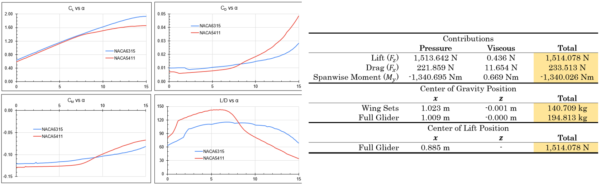

Glider Design Competition
Project Description
This project featured a class-wide competition for the best aerodynamic glider design. Success of the glider was divided into three seperate categories: endurance (total duration of flight), range (maximum horizontal distance travelled before landing), and altitude (maximum altitude reached during flight). Each glider was subject to several constraints such as the initial take off conditions (35 m/s takeoff at 20m height with 0deg angle of attack), body geometry (fixed fuselage and tail size and weight), and vehicle boundaries (maximum allowable wingspan width of 7m).
Several limiting factors were identified for the glider design, such as the weight density of the wing material, the center of mass location of the combined geometry, and the increased support (i.e., weight) needed near the base of the wings for larger lift-induced moments. The main factor of the design, however, was in the wing geometry as this would be the main source of both the lift and weight, both of which have the largest impact to the overall vehicle dynamics. To achieve a longer flight range, it was calculated that the lift to drag ratio (L/D) should be maximized. With this in mind, the glider was designed as shown above.
Final Design
The lifting surfaces of the glider are divided into the main wing set and the tail wing set; this was done to create a counter lifting force to stabilize the pitch of the glider during flight. Each wing surface is constructed based on a truncated elliptical wing platform in order to minimize the induced drag and approach an ideal elliptical lift distribution desired. This is combatted by increasing the aspect ratio of both wing sets and the tips of each wing are given a large dihedral angle (i.e., winglet) to combat the induced drag as well.
The airfoil design was limited to NACA four-series airfoils as per the project constraints. As mentioned before, placing the center of lift closer to the fuselage of the glider greatly reduces the material needed to support the wings given the large lift moment (roll moment) that would have been created with a more uniform lift distribution. Therefore, airfoils with higher camber were desired near the fuselage, and more efficient airfoils (high L/D ratio) were desired near the tips of the wings. The airfoils used at the root (NACA6315) and tip (NACA5411) of the main wing set were compared using XFoil to simulate the flow across a range of attack angles. In addition to this larger camber, a higher L/D ratio was desired which was dependent upon the range of angles of attack the glider was expected to be subjected to based on preliminary analysis. For each section of the main wing set, as well as the tail wing, the L/D ratio was maximized while setting the lift coefficient to the amount needed for the desired lift distribution. This process involved several iterations, but results could be computed as shown below to quantify this process.
Design Validation
The performance of the glider was computed first using XFoil to simulate the 2D flow over each wing section to optimize the airfoil selection, then through VSPAero (vortex lattice method flow solver in OpenVSP) to confirm the previous analysis as well as predict the overall lift and drag performance, then finally through SimScale to get the most accurate 3D simulation result. During the iteration process, XFoil and VSPAero were utilized to minimize computation time and to fine tune several of the design parameters such as the airfoil selection, wing dimensions, and wing posiitons. This optimization can be observed in the peak performance of each airfoil occuring around a given angle of attack set by the wing section twist as shown before. The results of the final glider design shown above were calculated via SimScale using k-omega SST turbulence model as shown below.
Path Forward
Future iterations of the design were needed as shown by these simulation results and the calculated performance parameters from before. However, the overall design was optimized based on the unique conditions of the glider and the performance required. The tail wing position and orientation was strategically determined to utilize the deflected free stream flow from the main wing set (around 8 degrees) as well as to minimize the parasitic and induced drag forces. Early onset flow seperation was noted in this design which can be improved by further optimizing the airfoil selection and angle of attack in each wing section to achieve the same lift required but with reduced seperation penalty. Overall, the glider was able to reach almost 100m (5s flight) with substantial lift across the flight.
While this competition was limited to using four-series NACA airfoils for all wing cross-sectional geometry, future iterations may involve using a wider range of airfoils. For this, software was developed to automate the process of optimizing an airfoil based on prescribed performance characteristics. This process operates by first creating an airfoil based on several other families of airfoils and parameters to tune the creation--this process involves singular value decomposition on this airfoil library and the software for this was developed by Dr. Van Buren at the University of Delaware. With this custom airfoil generated, the performance is evaluated using an implementation of XFoil in Matlab to automate the process and extract the key parameters, such as the average lift to drag ratio over a range of angles of attack. With the target objective defined, as well as the simulation scope to use, a hill climbing algorithm is employed to run this cycle repeatedly by slightly altering the tuning parameters for the airfoil creation and determining how much this effects the airfoil performance. Using such an algorithm would allow the glider to operate in the desired angle of attack range and ensure that the desired lift, drag, and lift to drag ratio performances are met for each wing section.